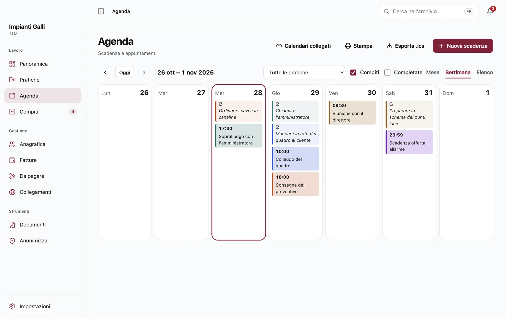
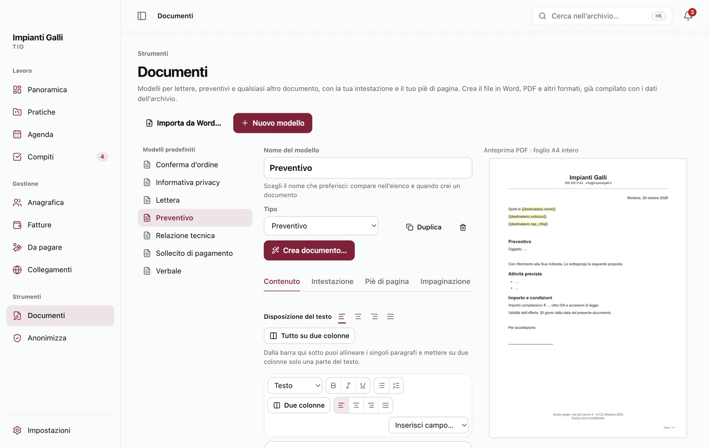
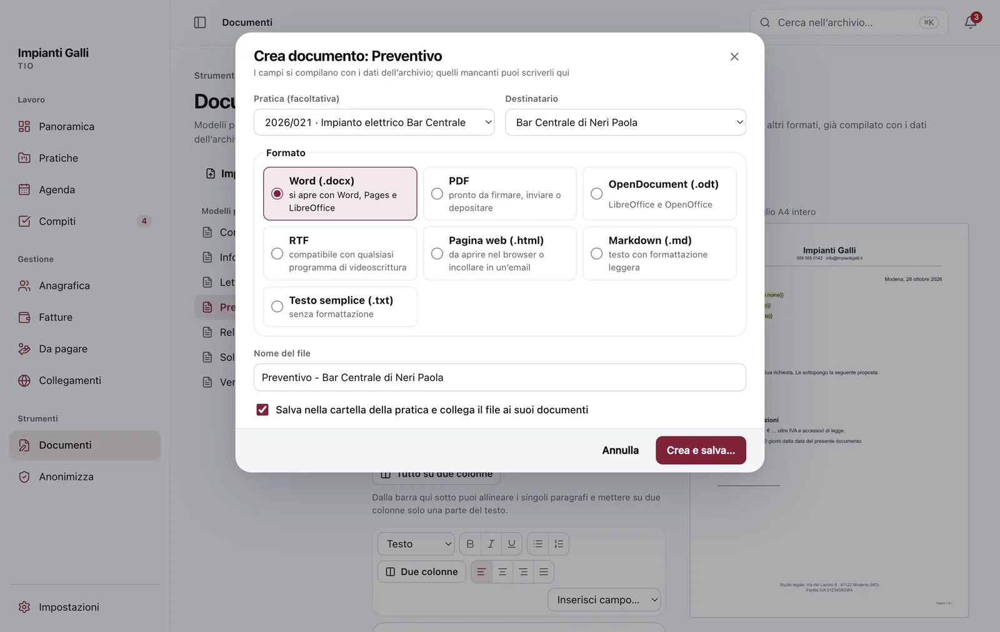
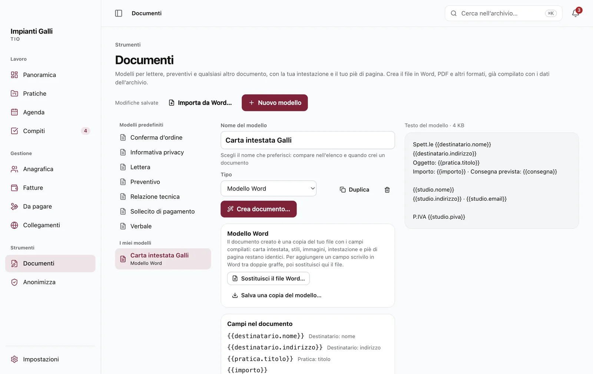
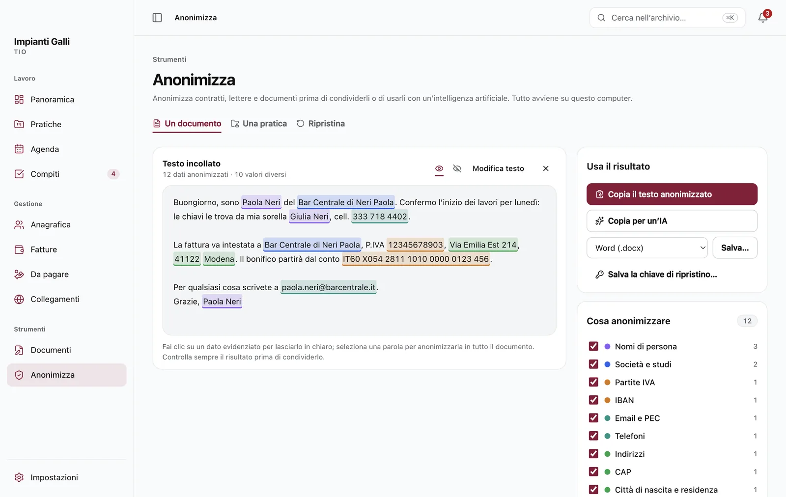
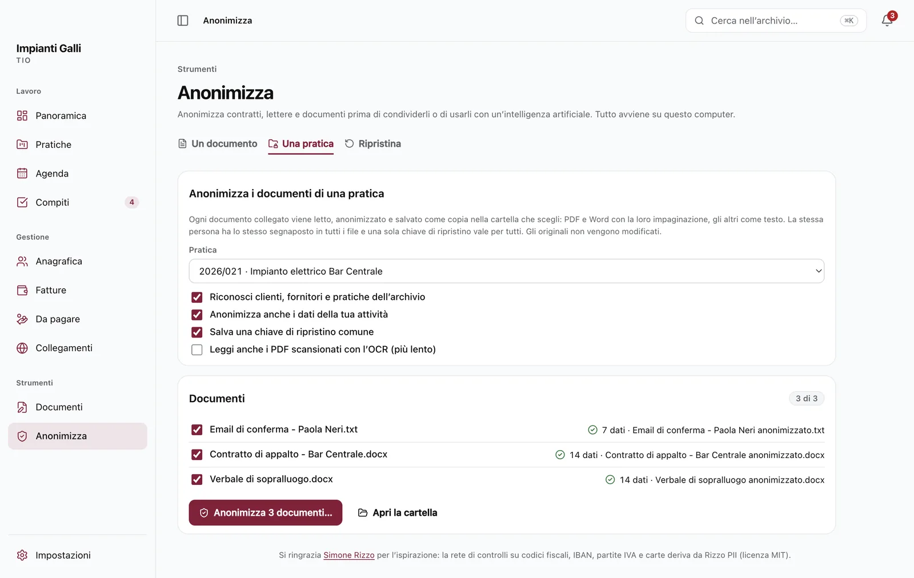
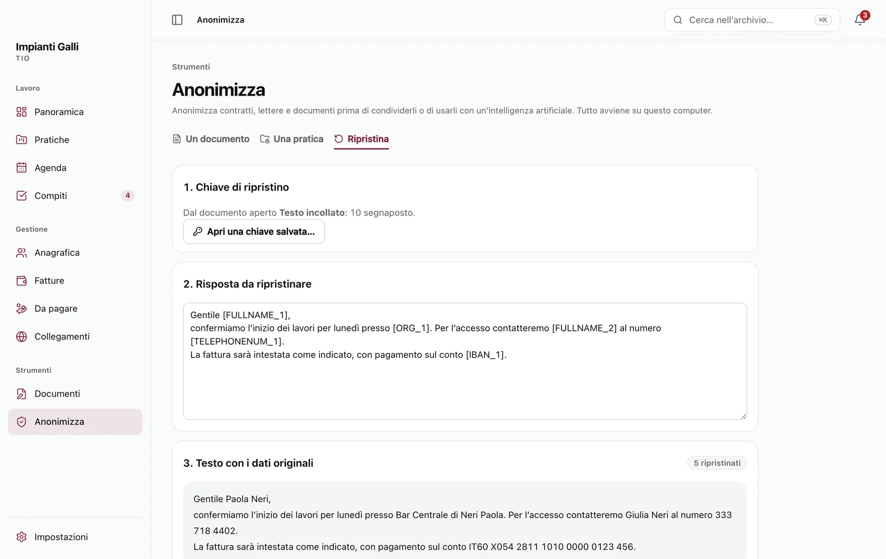
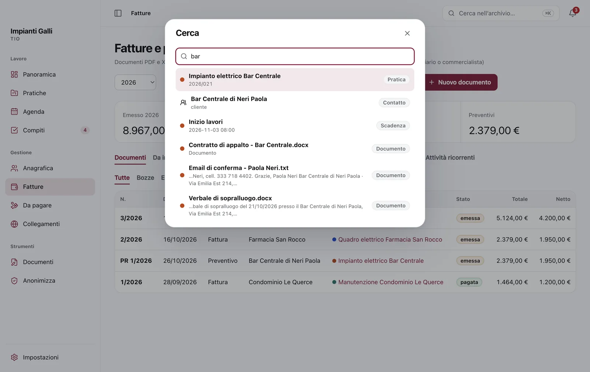
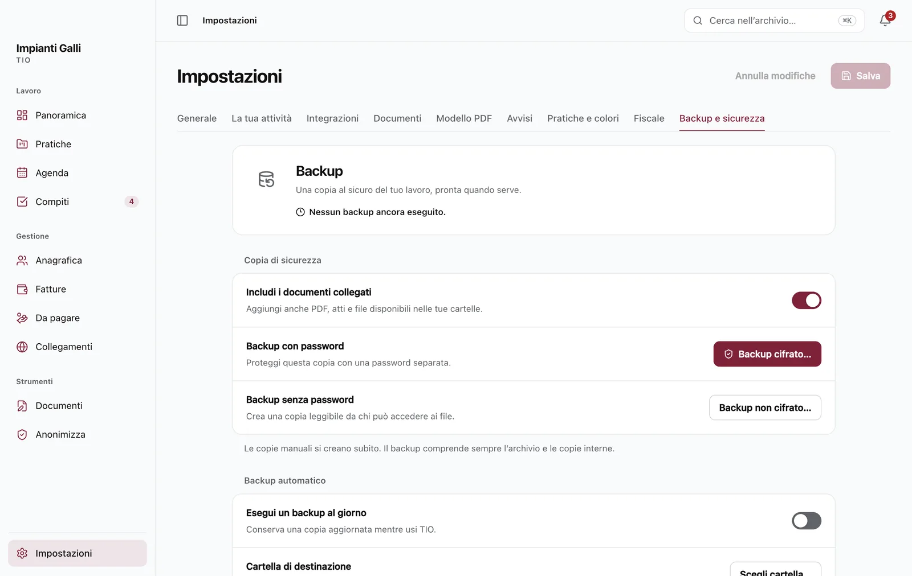

Guida completa · TIO 1.0
Tutto In Ordine, spiegato bene.
Il manuale di TIO, sezione per sezione: dall’installazione al primo documento, dall’agenda alla fattura elettronica, fino a Documenti e Anonimizza. Gratuito, sul tuo computer, anche senza internet.
1.Come usare questa guida
Questa guida è inclusa in TIO e si apre nel browser anche senza connessione: da Aiuto › Guida di TIO, con il tasto F1, dai comandi rapidi (⌘K, poi «Guida») oppure da Impostazioni › Backup e sicurezza › Informazioni.
- Cerca: scrivi nel campo in alto a sinistra (o premi /): l’indice mostra solo le sezioni che contengono le parole cercate. Invio apre la prima.
- Tasti: sul Mac ⌘ è il tasto Comando; su Windows usa Ctrl al suo posto. Quando i tasti sono diversi la guida li indica entrambi.
- Percorsi: «Impostazioni › Avvisi» significa: apri Impostazioni, poi la scheda Avvisi.
- Le parole cambiano col profilo: uno studio legale vede «Pratiche» e «Parcelle», un libero professionista «Incarichi» e «Documenti e incassi», una ditta «Commesse» e «Fatture». La guida usa di solito «lavoro» o «pratica»: vale per tutti.
2.Installare e avviare
Requisiti
| Sistema | File da scaricare |
|---|---|
| Mac con chip Apple (M1, M2…) | TIO-1.0.0-arm64.dmg · macOS 13 Ventura o successivo |
| Mac con processore Intel | TIO-1.0.0.dmg · macOS 13 o successivo |
| Windows | TIO-Setup-1.0.0.exe · Windows 10 o 11 a 64 bit |
L’app occupa circa 420 MB su Mac e 510 MB su Windows, più l’archivio e i backup. Non sai che Mac hai? Menu Apple › Informazioni su questo Mac: «Chip Apple M…» indica Apple Silicon, «Processore Intel» un Mac Intel.
Gli installer sono nella pagina Releases del progetto su GitHub, insieme al file SHA256SUMS.txt. Per controllare che il file scaricato sia integro e sia proprio quello pubblicato, confronta il suo codice:
- Mac, nel Terminale:
shasum -a 256 TIO-1.0.0-arm64.dmg - Windows, nel Prompt dei comandi:
certutil -hashfile TIO-Setup-1.0.0.exe SHA256
Su Mac
- Apri il file
.dmge trascina TIO nella cartella Applicazioni. - Apri TIO da Applicazioni. La prima volta macOS dice che non può verificare l’app: TIO non passa dall’App Store e non ha una firma a pagamento di Apple. Premi Fine.
- Apri Impostazioni di Sistema › Privacy e sicurezza, scorri fino a Sicurezza e premi Apri comunque accanto a «TIO è stato bloccato…». Inserisci la password del Mac e conferma.
Serve solo la prima volta. Su macOS 14 o precedenti basta anche clic destro sull’icona › Apri › Apri.
xattr -dr com.apple.quarantine /Applications/TIO.app: toglie il contrassegno «scaricato da internet» senza modificare l’app.Su Windows
- Scarica
TIO-Setup-1.0.0.exe. Se il browser dice che il file «non viene scaricato comunemente», scegli di conservarlo (in Edge: menu … › Mantieni › Mantieni comunque). - Fai doppio clic. Se compare «Windows ha protetto il PC» (SmartScreen), premi Ulteriori informazioni e poi Esegui comunque. L’avviso dipende dalla mancanza di una firma digitale a pagamento.
- Segui l’installazione in italiano: non servono permessi da amministratore. TIO crea l’icona sul desktop e nel menu Start e alla fine si apre.
C:\Utenti\<nome>\TIO Backup e …\TIO). Se scegli una cartella protetta, TIO spiega come autorizzarlo.Primo avvio
Al primo avvio TIO ti chiede:
- che lavoro fai: Studio legale, Libero professionista o Ditta individuale. Da questa scelta dipendono le parole usate, le aliquote proposte, i modelli di documento e le scadenze fiscali suggerite (vedi Studio, professionista, ditta);
- il nome dell’attività, che comparirà nell’intestazione dei documenti, e se vuoi il tuo nome e un colore.
Dopo il benvenuto TIO chiede una sola volta se vuoi essere avvisato delle nuove versioni. Tutto si cambia poi da Impostazioni.
Il primo passo consigliato è completare Impostazioni › Studio (o La tua attività): indirizzo, partita IVA, codice fiscale, email, PEC, banca e IBAN finiscono nei PDF, nei modelli di documento e nella fattura elettronica. Logo e colore si scelgono in Impostazioni › Generale.
La finestra e gli avvisi
La X non chiude TIO. La finestra si nasconde e TIO resta attivo per mandarti gli avvisi (si cambia in Impostazioni › Generale › Resta attiva in background alla chiusura della finestra): sul Mac nella barra dei menu in alto, su Windows nell’area di notifica vicino all’orologio. Per riaprirlo fai clic sull’icona; per uscire davvero scegli TIO › Esci (⌘Q) sul Mac, oppure clic destro sull’icona › Esci su Windows.
Sul Mac, il clic destro sull’icona nel Dock offre le azioni più frequenti (nuovo lavoro, nuova scadenza, nuovo compito) anche a finestra chiusa.
Aggiornare
Scarica la nuova versione e installala sopra quella che hai, senza disinstallare: archivio, impostazioni e backup restano. Prima conviene fare un backup (Impostazioni › Backup e sicurezza).
Se hai attivato Impostazioni › Backup e sicurezza › Aggiornamenti › Controlla gli aggiornamenti ogni giorno, TIO chiede a GitHub soltanto il numero dell’ultima versione. Quando ne esce una nuova compare un piccolo riquadro «Aggiornamento x.y.z» accanto a «Cerca nell’archivio…»: porta alla sezione Aggiornamenti, con il pulsante per aprire la pagina di download. TIO non scarica e non installa nulla da solo.
Disinstallare
- Mac: trascina TIO da Applicazioni nel Cestino.
- Windows: Impostazioni › App › App installate › TIO › Disinstalla.
La disinstallazione non cancella i tuoi dati. Per eliminarli del tutto, dopo aver salvato ciò che ti serve:
| Archivio | Backup automatici | |
|---|---|---|
| Mac | ~/Library/Application Support/TIO | Documenti/TIO Backup |
| Windows | %APPDATA%\TIO | %USERPROFILE%\TIO Backup |
3.Come è fatto TIO
TIO è una sola finestra: a sinistra la barra con le sezioni, in alto la ricerca e le notifiche, al centro il lavoro.
La barra laterale
| Gruppo | Sezioni |
|---|---|
| Lavoro | Panoramica, Pratiche, Agenda, Compiti. Accanto ad Agenda un numero rosso conta le scadenze in ritardo, accanto a Compiti quelli da fare. |
| Gestione | Anagrafica, Parcelle, Da pagare, Collegamenti. |
| Strumenti | Documenti e Anonimizza. |
| In fondo | Impostazioni. |
La barra si nasconde e ricompare con il pulsante in alto a sinistra, con ⌃⌘S sul Mac o CtrlB su Windows. Ogni sezione ha anche un tasto rapido: vedi Scorciatoie.
La barra in alto
- Cerca nell’archivio… apre la ricerca e i comandi rapidi (⌘K): vedi Ricerca e comandi.
- Aggiornamento: compare solo quando c’è una versione nuova.
- Lucchetto: compare se hai attivato il blocco con password e blocca TIO subito.
- Campanella: le notifiche (avvisi di scadenze, compiti, aggiornamenti). Un clic su una notifica apre l’elemento; «Segna tutte come lette» e «Svuota» puliscono l’elenco.
Dentro la scheda di un lavoro, in alto compare il percorso (per esempio «Pratiche › 2026/021»): un clic sul primo nome torna all’elenco.
Studio, professionista, ditta
Il profilo si sceglie al primo avvio e si cambia in Impostazioni › Generale. Cambiandolo, TIO propone nuove etichette e aliquote: controllale prima di salvare.
Le etichette («Pratica», «Cliente», «Controparte», «Autorità», «Parcella»…) si possono anche riscrivere a mano in Impostazioni › Pratiche e colori.
↑ Torna all’inizio4.Panoramica

È la prima schermata: la giornata in un colpo d’occhio.
- Saluto e riepilogo: la data e quante scadenze ci sono nei prossimi 14 giorni.
- Azioni rapide: nuovo cliente, nuovo compito, nuova scadenza, nuovo lavoro.
- Numeri: lavori attivi, scadenze in ritardo, scadenze entro 7 giorni, compiti da fare, importo da incassare. Un clic porta alla sezione corrispondente.
- Scadenzario: udienze, scadenze e appuntamenti dei prossimi 14 giorni, con il colore del lavoro.
- Da fare: i compiti in sospeso, spuntabili da qui.
- Lavori attivi: i preferiti per primi; un clic apre la scheda.
5.Pratiche, incarichi e commesse
Il lavoro è il centro di TIO: ogni pratica (o incarico, o commessa) raccoglie cliente, scadenze, compiti, note, documenti, ore, spese, documenti contabili e collegamenti.
Creare un lavoro
Con Nuova pratica (o ⌘N) compili:
- numero e titolo (per esempio «2026/021 · Impianto elettrico Bar Centrale»);
- cliente e, se serve, controparte o fornitore, scelti dall’anagrafica o creati al volo;
- tipologia e stato (Aperta, In corso, In attesa, Sospesa, Chiusa, Archiviata: si cambiano in Impostazioni), colore;
- per gli avvocati autorità, numero di ruolo (R.G.) e giudice; per tutti un valore e un riferimento.
Il colore accompagna il lavoro ovunque: in agenda, nella Panoramica, nei documenti contabili.
Elenco, schede e filtri
La sezione mostra i lavori a schede, in elenco o raggruppati per stato. Puoi cercare, filtrare per stato e tipologia, segnare i preferiti (stella) che salgono in cima, e selezionarne più di uno per eliminarli insieme.
La scheda del lavoro

Aprendo un lavoro trovi le schede:
| Scheda | Cosa contiene |
|---|---|
| Panoramica | Dati principali, prossime scadenze, compiti aperti e la cronologia: ogni modifica, documento e scadenza con data e ora. |
| Compiti | Le cose da fare per questo lavoro. |
| Scadenze | Udienze, scadenze e appuntamenti, con gli avvisi. |
| Documenti | I file collegati, la ricerca nel loro testo, «Da modello…» e «Anonimizza…». |
| Note | Appunti liberi, ricercabili. |
| Attività e spese | Ore lavorate, spese anticipate, budget e consegna. |
| Parcelle | I documenti contabili del lavoro (fatture, preventivi, note pro forma). |
| Collegamenti | Siti e portali legati al lavoro. |
Documenti collegati, non copiati
TIO non copia i tuoi file: ricorda dove sono. Trascina un file nella scheda Documenti oppure sceglilo; resta nella tua cartella. Se lo sposti o lo rinomini, Sincronizza lo ritrova (cerca nelle cartelle indicate in Impostazioni › Documenti).
- Ricerca nel testo di PDF, Word, Excel ed email; le scansioni si leggono con l’OCR italiano, sul computer.
- Anteprima dei PDF e delle immagini senza aprire altri programmi; «Mostra nella cartella» per trovarli nel Finder o in Esplora file.
- Per sicurezza TIO non avvia programmi o script contenuti nei documenti collegati.
Attività, ore e spese
In Attività e spese registri le ore lavorate (data, durata, descrizione, tariffa oraria) e le spese anticipate (con o senza IVA), anche con un allegato. Quando prepari un documento contabile dal lavoro, ore e spese non ancora fatturate si possono importare come voci; se elimini il documento tornano «da fatturare».
Budget e consegna
Con Modifica budget imposti ore previste, importo concordato e data di consegna. TIO confronta ore registrate e costi con il preventivato e segnala quando il budget ore è superato. Il residuo è una stima operativa, non l’utile fiscale.
Eliminare e annullare
Eliminando un lavoro si eliminano anche scadenze, compiti, note, collegamenti e riferimenti ai documenti (i file sul disco restano). Dopo un’eliminazione compare Annulla per qualche secondo: usalo se hai sbagliato.
↑ Torna all’inizio6.Agenda e avvisi

Mese, settimana, elenco
Tre viste: Mese, Settimana ed Elenco. Gli eventi hanno il colore del loro lavoro; quelli dei calendari collegati compaiono accanto. Le scadenze superate e non completate sono evidenziate e contate nella barra laterale.
Ogni evento ha un tipo: per gli studi legali Udienza, Scadenza / termine, Appuntamento e Altro; per professionisti e ditte Scadenza, Appuntamento / sopralluogo e Altro. Puoi indicare luogo, note e il lavoro a cui appartiene. Lo spunti come completato quando è fatto.
Gli avvisi
Ogni evento può avere più avvisi: al momento dell’evento, 15 o 30 minuti prima, un’ora prima e così via fino a due settimane prima. I promemoria predefiniti si scelgono in Impostazioni › Avvisi.
- Gli avvisi arrivano come notifiche del sistema anche a finestra chiusa, finché TIO è attivo nella barra dei menu o vicino all’orologio.
- C’è un riepilogo giornaliero degli impegni.
- Con le notifiche riservate gli avvisi non mostrano i dettagli dell’evento.
Esito dell’udienza (studi legali)
Quando chiudi un’udienza TIO chiede l’esito: lo annoti, fissi la data del rinvio (che diventa una nuova udienza) e, se serve, crei un compito per gli adempimenti.
Calcolo dei termini (studi legali)
Con Calcola termine (in Agenda o dai comandi rapidi) imposti la data di partenza, la durata in giorni, mesi o anni e il verso:
- in avanti: se l’ultimo giorno è festivo si va al primo giorno non festivo;
- a ritroso: un festivo o un sabato anticipano al giorno utile precedente;
- sospensione feriale dal 1° al 31 agosto, salvo i termini che non la prevedono;
- festività nazionali, compreso il 4 ottobre dal 2026. Il santo patrono non è considerato.
TIO mostra tutti i passaggi del conteggio e crea direttamente la scadenza. Il calcolo è sperimentale: verificalo sempre.
Calendari collegati
In Impostazioni › Integrazioni, «Collega un calendario»: incolli il link iCal (Google Calendar: Impostazioni › il tuo calendario › Integra il calendario › Indirizzo segreto in formato iCal; Outlook, iCloud, Cliens Più: Agenda › Esporta) oppure scegli un file .ics. Gli impegni compaiono in agenda e negli avvisi, in sola lettura: TIO non scrive mai negli altri calendari e non chiede password.
Per gli avvocati, Pratiche… accanto a un calendario riconosce negli eventi le parti, il numero di ruolo, l’ufficio e il giudice e importa, dopo un’anteprima, le pratiche che scegli (vedi Portare dentro i dati).
Stampa ed esportazione
L’agenda si stampa in PDF e si esporta in un file .ics da aprire nel calendario del telefono. L’esportazione è una copia: non si aggiorna da sola.
7.Compiti
I compiti sono le cose da fare, con o senza lavoro collegato. Ognuno ha un titolo, una scadenza facoltativa e una priorità. Si riordinano trascinandoli e si spuntano quando sono fatti. Le viste Da fare, Oggi e in ritardo e Completate aiutano a vedere cosa preme.
- Il numero accanto a «Compiti» nella barra laterale conta quelli da fare.
- I compiti che si ripetono (un controllo mensile, un rinnovo annuale, le scadenze fiscali) si impostano una volta sola come attività ricorrenti: TIO crea il compito a ogni scadenza.
8.Anagrafica
Clienti, controparti, fornitori e altri contatti, persone o società, con dati fiscali (codice fiscale, partita IVA), indirizzo, email, PEC, telefono e note.
- Per la fattura elettronica TIO ricorda il codice destinatario e la PEC di ogni cliente.
- Dalla scheda di un contatto vedi i suoi lavori e i suoi documenti contabili.
- Conflitto di interessi (studi legali): se una persona compare come cliente in una pratica e come controparte in un’altra, TIO lo segnala.
Clienti e controparti dell’anagrafica servono anche ad Anonimizza, che li riconosce nei documenti anche dal solo cognome.
↑ Torna all’inizio9.Parcelle, fatture e preventivi

La sezione (Parcelle, Fatture o Documenti e incassi secondo il profilo) raccoglie i documenti contabili dell’anno scelto, con i totali in alto: emesso, incassato netto, da incassare e preventivi. Le schede in alto portano a Documenti, Da incassare, Redditività e, secondo il profilo, a Preventivi e lavori, Pagamenti, Costi e fornitori e Attività ricorrenti.
I tipi di documento
| Tipo | A cosa serve |
|---|---|
| Parcella / Fattura | Il documento di vendita, numerato per anno (1/2026, 2/2026…). |
| Preventivo | Numerato a parte («PR»), con validità ed esito (da inviare, inviato, accettato, rifiutato). |
| Nota pro forma | Da mandare prima della fattura, numerata a parte. |
| Nota di credito | Lo storno totale di una fattura emessa, numerata «NC» (vedi Nota di credito). |
Ogni documento ha uno stato: bozza, emessa, pagata, annullata (e «stornata» per una fattura con nota di credito). Gli stati di incasso seguono i pagamenti registrati.
Voci e aliquote
Un documento è fatto di voci, ognuna con tipo, descrizione, quantità e importo:
- Compenso: il tuo lavoro;
- Spesa imponibile: un rimborso di spese sostenute per il lavoro, soggetto a IVA come il compenso;
- Spesa esente: una spesa anticipata in nome e per conto del cliente, fuori dall’IVA (art. 15 DPR 633/1972).
Sulle voci TIO calcola, con le aliquote di Impostazioni › Fiscale (modificabili nel singolo documento):
- spese generali (per gli avvocati, in percentuale sui compensi);
- contributo previdenziale: CPA per gli avvocati, la cassa o la rivalsa INPS per i professionisti, con nome e percentuale configurabili;
- IVA sull’imponibile (a zero per il regime forfettario);
- ritenuta d’acconto, se il cliente è sostituto d’imposta;
- bollo da 2 € quando non c’è IVA e l’importo supera 77,47 €.
Il prospetto finale mostra totale e netto da pagare.
Spese extra
Sotto le voci, il menu + Spesa extra… aggiunge una spesa già impostata con il trattamento IVA corretto. Basta poi scrivere l’importo.
| Gruppo | Voci pronte |
|---|---|
| Anticipate per conto del cliente · senza IVA | Marca da bollo (16 €), contributo unificato e anticipazioni forfettarie da 27 € (avvocati), diritti di copia, notifiche, spese postali, visure e certificati, registrazione atti, diritti e tasse per conto del cliente. |
| Rimborsi di spese sostenute · con IVA | Carburante, trasferta (rimborso chilometrico), pedaggi e parcheggi, treno e trasporti, vitto e alloggio, domiciliazione (avvocati); materiali, noleggio attrezzature, spedizione, smaltimento (ditte). |
Compensi forensi (studi legali)
Nel documento, «Calcola il compenso con i parametri forensi» apre il calcolo con le tabelle del DM 55/2014 aggiornate dal DM 147/2022: 48 competenze, scaglioni per valore (anche indeterminabile), fasi con minimo, medio e massimo, aumenti e riduzioni, compenso tabellare o in percentuale. Il risultato entra nel prospetto insieme alle altre voci (ore, spese, importi liberi). È un’ipotesi da verificare sul caso concreto.
Il PDF
Salva PDF… crea il documento con la tua intestazione, il logo e il piè di pagina. L’aspetto si imposta una volta in Impostazioni › Modello PDF, con anteprima: posizione e dimensione del logo, testi, caratteri. «Ripristina» ricostruisce il modello dai dati dello studio o dell’attività.
Con Importa PDF / Word puoi anche caricare il riepilogo di una parcella preparato altrove: TIO legge le voci e ricalcola i totali, segnalando le differenze.
Fattura elettronica XML
Dall’editor di una fattura, Fattura elettronica prepara il file IT<codice>_<progressivo>.xml nel formato FatturaPA tra privati (FPR12, schema 1.2.3). Contiene compensi, spese generali, contributo previdenziale (CPA o rivalsa INPS), IVA o natura (N2.2 per il forfettario), spese escluse art. 15 (N1), ritenuta, bollo virtuale e pagamento con IBAN.
- Prima di salvare TIO controlla partite IVA, codici fiscali, indirizzi, codice destinatario o PEC e la coerenza dei totali, e indica cosa correggere.
- Il tipo documento è TD01 per la fattura, TD04 per la nota di credito.
- TIO non invia nulla al Sistema di Interscambio (SdI). Il file si carica su Fatture e Corrispettivi, sul servizio del tuo intermediario o si consegna al commercialista, che gestisce ricevute e conservazione.
Regime fiscale, tipo di cassa e natura si scelgono nella finestra Fattura elettronica; TIO li ricorda per le fatture successive.
Nota di credito
Da una fattura emessa, Nota di credito crea lo storno totale: stesse voci e importi, numerazione «NC», oggetto «Storno totale della fattura n. … del …». La fattura diventa «stornata» e non è più da incassare; prima nota e totali la compensano (la nota compare in negativo). Della nota puoi preparare il PDF e l’XML (TD04, con il riferimento alla fattura). Oggi è possibile solo lo storno totale: per uno sconto parziale serve una nota preparata con il commercialista.
Incassi e solleciti
- Pagamenti: registra ogni incasso con data, importo e metodo (bonifico, carta, contanti…). Il residuo si aggiorna e il documento diventa «pagato» quando è saldato.
- Da incassare: i documenti emessi non ancora saldati. Per ognuno TIO prepara il testo del sollecito, da copiare o aprire nella tua email.
Prima nota e redditività
- Prima nota (CSV): tutti i documenti dell’anno in un file che si apre con Excel, da passare al commercialista.
- Redditività per lavoro: compensi, ore, spese e costi a confronto.
- Per professionisti e ditte, un CSV dedicato con destinatari e voci si adatta al proprio servizio di fatturazione.
Preventivi e lavori
Imposta validità ed esito nel preventivo. Da un preventivo accettato: «Avvia lavoro» crea il lavoro collegato, «Prepara documento» una bozza del documento di vendita; il preventivo resta conservato. Ripetendo l’azione TIO apre lo stesso lavoro o documento, senza duplicati.
Costi e fornitori
Costi generali o del singolo lavoro, con fornitore, categoria, scadenza del pagamento e stato. «Recuperabile» ricorda un rimborso da chiedere al cliente, senza aggiungerlo da solo ai documenti. Gli stessi costi compaiono in Da pagare. Non registrare qui una spesa già inserita tra quelle anticipate del lavoro.
Attività ricorrenti
Compiti che si ripetono ogni settimana, mese o anno, generali o di un lavoro. A ogni scadenza TIO crea il compito con il promemoria. Il giorno originario resta quando possibile (31 gennaio, 28 febbraio, 31 marzo). Dopo una lunga pausa TIO crea un solo compito arretrato e riparte dalla prima data futura.
Con Sabati e festivi › Sposta al primo giorno lavorativo una scadenza che cade nel fine settimana o in un festivo nazionale slitta al primo giorno lavorativo.
Scadenze fiscali
In Attività ricorrenti, Scadenze fiscali… propone le scadenze del tuo profilo e regime (IVA mensile, trimestrale o forfettario), da spuntare:
- per tutti: IVA e saldo IVA, LIPE, dichiarazione IVA, imposte sui redditi (saldo, primo e secondo acconto, dichiarazione), ritenute e Certificazione Unica, bollo sulle fatture elettroniche;
- studi legali: Cassa Forense (contributi minimi, Modello 5, autoliquidazione);
- professionisti: INPS gestione separata o la propria cassa;
- ditte: INPS artigiani e commercianti (contributi fissi ed eccedenti), diritto annuale della Camera di Commercio.
Diventano attività ricorrenti con titolo «Fisco: …» e la rata o il trimestre; sabati e festivi slittano da soli al primo giorno lavorativo. Proroghe straordinarie e santo patrono non sono considerati: verifica le date con il commercialista.
↑ Torna all’inizio10.Da pagare
Sotto Parcelle, Da pagare è l’elenco di ciò che devi pagare tu: prestazioni e consulenze, domiciliazioni e sostituzioni, consulenti tecnici, spese extra, fornitori, imposte e contributi.
- In alto i totali: da pagare, scadute, entro 30 giorni, pagate nell’anno.
- Le voci scadute sono in cima, in rosso; poi in ordine di scadenza.
- Pagata sposta la voce tra le pagate; Riapri la rimette da pagare. I filtri mostrano da pagare, pagate o tutte.
- Ogni voce può avere fornitore, lavoro collegato, categoria e «da riaddebitare al cliente».
- Esporta CSV per Excel o il commercialista.
Le voci sono gli stessi costi di Parcelle › Costi e fornitori e contano nella redditività dei lavori.
↑ Torna all’inizio11.Collegamenti
I siti che usi più spesso, in riquadri: portali dei tribunali, PEC, banca, Agenzia delle Entrate, fornitori. Possono essere globali (sezione Collegamenti) o di un lavoro (scheda Collegamenti della pratica). Un clic li apre nel browser.
↑ Torna all’inizio12.Documenti
Lo strumento Documenti (⌘8) prepara lettere, preventivi e qualsiasi altro documento con la tua intestazione, già compilati con i dati dell’archivio.
Modelli predefiniti

Alla prima apertura trovi i modelli del tuo profilo: per esempio lettera, preventivo, diffida e messa in mora, procura alle liti, incarico professionale, verbale, relazione, conferma d’ordine, sollecito di pagamento e l’informativa privacy (art. 13 GDPR). L’incarico professionale contiene già la clausola sul trattamento dei dati, il recesso e l’assicurazione; i dati della tua attività sono inseriti.
Puoi rinominarli come vuoi, modificarli, duplicarli, eliminarli o crearne di nuovi con Nuovo modello.
Modificare un modello
Il modello ha quattro schede:
- Contenuto: il testo, con titoli, grassetto, corsivo, sottolineato, elenchi;
- Intestazione e Piè di pagina: righe, logo, dimensione e allineamento;
- Impaginazione: disposizione del testo, carattere del documento, città per la data.
Disposizione del testo: a sinistra, al centro, a destra o giustificato, per tutto il documento o per il singolo paragrafo. Tutto su due colonne mette l’intero testo su due colonne; selezionando alcuni paragrafi, Due colonne lo fa solo per quella parte.
L’anteprima A4 a destra mostra il risultato; le modifiche si salvano da sole.
I campi automatici
I campi si scrivono tra doppie graffe e si inseriscono anche con Inserisci campo…. Quando crei il documento, TIO li riempie con i dati dell’archivio:
| Campo | Diventa |
|---|---|
{{destinatario.nome}} | il nome del destinatario (il cliente del lavoro, oppure chi scegli) |
{{destinatario.indirizzo}}, {{destinatario.cap_citta}} | il suo indirizzo |
{{pratica.titolo}}, {{pratica.numero}}, {{pratica.rg}} | i dati del lavoro |
{{studio.nome}}, {{studio.indirizzo}}, {{studio.piva}}, {{studio.email}} | i dati della tua attività |
{{oggi}} | la data di oggi |
Puoi anche inventare i tuoi campi, come {{importo}} o {{consegna}}: quando crei il documento TIO te li chiede.
Creare un documento

- Scegli il modello e premi Crea documento….
- Scegli il lavoro: il destinatario diventa il suo cliente (lo puoi cambiare). Compila i campi che mancano.
- Scegli il formato: Word, PDF, OpenDocument, RTF, pagina web, Markdown o testo semplice.
- Con «Salva nella cartella della pratica» il file finisce nella cartella del lavoro ed è collegato ai suoi documenti.
Dalla scheda Documenti di un lavoro, Da modello… fa lo stesso senza passare dallo strumento, con il lavoro già scelto.
Modelli Word

Hai già la tua carta intestata in Word? Importa da Word… la trasforma in modello:
- In Word scrivi i campi tra doppie graffe dove servono, per esempio
Spett.le {{destinatario.nome}}oImporto: {{importo}}, e salva il.docx. - In TIO scegli Importa da Word…: il modello prende il nome del file e mostra i campi trovati, con il dato che userà per ognuno.
- Crea il documento come gli altri: TIO fa una copia del tuo file con i campi compilati. Stili, immagini, logo, intestazione e piè di pagina restano identici.
- TIO riconosce i campi anche quando Word li spezza in più parti.
- Per cambiare il modello usa Sostituisci il file Word…: nome e documenti già creati restano. Salva una copia del modello… lo riporta su disco.
- Dai modelli Word si crea un file Word con la stessa impaginazione; se ti serve il PDF, salvalo da Word.
13.Anonimizza
Anonimizza (⌘9) toglie i dati personali dai documenti prima di condividerli o di usarli con un’intelligenza artificiale. Tutto avviene sul tuo computer: nessun dato viene inviato.
Anonimizzare

Nella scheda Un documento incolli un testo, oppure apri o trascini un file: PDF (anche scansionato, con l’OCR), Word, OpenDocument, RTF, email o testo. TIO riconosce 22 tipi di dati, tra cui:
- nomi di persona, società e studi;
- codici fiscali, partite IVA, IBAN e carte (con i controlli dei codici: una sequenza qualunque non viene scambiata per un codice fiscale);
- indirizzi, CAP, città, telefoni, email e PEC, siti;
- date, importi, targhe, documenti d’identità, numeri degli atti (R.G., fatture), dati catastali.
Ogni dato diventa un segnaposto come [FULLNAME_1] o [IBAN_1]. La stessa persona ha sempre lo stesso segnaposto, anche quando compare col solo cognome. Con l’archivio, TIO riconosce i tuoi clienti, controparti e lavori; a scelta anonimizza anche i dati della tua attività.
Correggere il risultato
- Un clic su un dato evidenziato → «Lascia in chiaro»: il dato resta visibile in tutto il testo.
- Seleziona una parola → scegli la categoria e «Anonimizza»: viene coperta ovunque compaia. Le tue correzioni restano elencate.
- A destra, Cosa anonimizzare accende o spegne intere categorie (per esempio lascia le date).
- Le icone dell’occhio mostrano il testo originale o quello anonimizzato.
Copiare e salvare
- Copia il testo anonimizzato; Copia per un’IA aggiunge le istruzioni per mantenere i segnaposto nella risposta.
- Salva… crea una copia: per i Word e i PDF con la stessa impaginazione. Nel PDF ogni pagina diventa un’immagine dell’originale con i dati coperti e il segnaposto scritto sopra, senza testo, metadati, moduli o allegati dell’originale. Gli altri file si salvano in Word, testo o altri formati.
- Salva la chiave di ripristino… salva in un file l’abbinamento tra segnaposto e dati veri. Conservala con cura: contiene i dati originali.
Il file originale non viene mai modificato.
Un lavoro intero

Nella scheda Una pratica (o con Anonimizza… nella scheda Documenti del lavoro) scegli il lavoro: TIO elenca i documenti leggibili collegati, tu togli quelli che non servono e scegli la cartella di destinazione.
- Ogni documento viene letto, anonimizzato e salvato come copia «… anonimizzato»: PDF e Word con la loro impaginazione, gli altri come testo.
- La stessa persona ha lo stesso segnaposto in tutti i file e una sola chiave vale per tutto il lavoro.
- Per le scansioni attiva «Leggi anche i PDF scansionati con l’OCR» (più lento). Togliendo «Salva una chiave di ripristino comune» l’anonimizzazione è definitiva.
- Accanto a ogni file compare l’esito: quanti dati, il nome della copia, oppure perché non è stato possibile.
Ripristinare i dati

- Manda all’intelligenza artificiale il testo anonimizzato e copia la sua risposta.
- Apri la scheda Ripristina: usa la chiave del documento aperto oppure Apri una chiave salvata….
- Incolla la risposta: sotto compare il testo con nomi, numeri e indirizzi veri, pronto da copiare. Funziona anche se l’IA ha scritto i segnaposto senza parentesi.
Cosa sapere
La rete di controlli sui codici deriva da Rizzo PII di Simone Rizzo (licenza MIT): vedi Licenza e ringraziamenti.
↑ Torna all’inizio14.Ricerca e comandi

Premi ⌘K (CtrlK su Windows) o fai clic su «Cerca nell’archivio…» e scrivi:
- Ricerca: lavori, clienti, scadenze, compiti, note e documenti. Dentro il testo di PDF e scansioni si cerca dalla scheda Documenti del lavoro.
- Comandi: «nuovo», «scadenza», «agenda», «guida»… per creare un elemento o andare a una sezione senza mouse. Ogni comando mostra la sua scorciatoia.
Muoviti con le frecce, Invio apre, Esc chiude.
↑ Torna all’inizio15.Impostazioni
Si aprono dalla barra laterale o con ⌘,. Le schede:
| Scheda | Cosa si imposta |
|---|---|
| Generale | Profilo (studio legale, libero professionista, ditta individuale), colore principale e logo, tema chiaro, scuro o automatico, vista compatta, restare attivo alla chiusura della finestra, avvio all’accesso al computer. |
| Studio / La tua attività | Nome, titolare, intestazione, indirizzo e domicilio fiscale, partita IVA e codice fiscale, email, PEC, telefono, banca e IBAN: compaiono nei documenti. |
| Integrazioni | Calendari collegati, importazione di dati e cartelle di documenti. |
| Documenti | Dove TIO salva i documenti che crea, dove cerca i file spostati, sincronizzazione dei collegamenti. |
| Modello PDF | Aspetto dei PDF di parcelle, fatture e preventivi, con anteprima. |
| Avvisi | Promemoria predefiniti, notifiche del sistema, riepilogo giornaliero, notifiche riservate (senza dettagli). |
| Pratiche e colori | Etichette (Pratica, Cliente, Controparte…), stati, tipologie e colori. |
| Fiscale | Aliquote predefinite: spese generali, contributo previdenziale (nome, percentuale, se entra nella base della ritenuta), IVA, ritenuta, bollo, tariffa oraria predefinita. |
| Backup e sicurezza | Backup automatico e con password, verifica e ripristino, blocco con password, aggiornamenti, cartella dati, segnalazione di problemi, guida, licenze. |
16.Backup, ripristino e sicurezza

Backup automatico
Ogni giorno TIO salva una copia dell’archivio e tiene le ultime (sette, se non cambi il numero): sul Mac in Documenti › TIO Backup, su Windows in C:\Utenti\<nome>\TIO Backup. Puoi scegliere un’altra cartella, per esempio un disco esterno, e includere i documenti collegati. In Copia di sicurezza puoi farne una subito, dove vuoi: Backup cifrato… (con password) o Backup non cifrato….
Backup con password
Le copie si possono cifrare con una password: senza password non si leggono. Conservala in un posto sicuro: senza password il backup non si recupera, nemmeno da chi ha scritto TIO.
Ripristinare
- Verifica una copia controlla che un backup sia integro, senza toccare l’archivio.
- Ripristina i dati (o «Ripristina da backup…» al primo avvio su un computer nuovo) sostituisce l’archivio con una copia. Prima TIO salva l’archivio attuale, così puoi tornare indietro.
Blocco con password
In Backup e sicurezza › Accesso a TIO puoi chiedere una password all’avvio, dopo un periodo di inattività e quando blocchi lo schermo. Il lucchetto in alto blocca subito.
Cifratura del disco
17.Portare dentro i dati
- Da Excel o CSV (anche «Esporta lista» di Cliens Più): anagrafiche, pratiche, udienze e scadenze, parcelle. TIO mostra un’anteprima e salta i doppioni. Per un’agenda cartacea ci sono modelli da compilare.
- Da un calendario: con il link iCal o un file
.ics(vedi Calendari collegati). Gli studi legali, con Pratiche…, importano le pratiche riconosciute negli eventi (parti, numero di ruolo, ufficio, giudice) dopo un’anteprima; se vuoi, quelle nuove arrivano da sole a ogni aggiornamento. Non è un collegamento all’archivio completo di altri gestionali e non ne importa i documenti. - Da una cartella di documenti: ogni sottocartella si abbina a un lavoro (o ne crea uno) e i file vengono collegati, mai spostati.
18.Privacy
L’archivio è un database sul tuo computer. TIO non ha server, account, pubblicità né statistiche d’uso. Escono dati solo quando lo chiedi tu:
- per leggere un calendario collegato (la richiesta va al servizio del calendario);
- per il controllo facoltativo degli aggiornamenti (GitHub riceve solo la richiesta del numero di versione e vede l’indirizzo IP);
- quando apri un link o un collegamento nel browser.
L’anonimizzazione, l’OCR, la ricerca nei documenti, i PDF e la fattura elettronica funzionano interamente sul computer. Il testo completo è nel file PRIVACY.md del progetto.
19.Scorciatoie da tastiera
| Mac | Windows | Azione |
|---|---|---|
| ⌘K | CtrlK | Ricerca e comandi |
| ⌘N | CtrlN | Nuovo lavoro |
| ⌘, | Ctrl, | Impostazioni |
| ⌘1 | Ctrl1 | Panoramica |
| ⌘2 | Ctrl2 | Pratiche |
| ⌘3 | Ctrl3 | Agenda |
| ⌘4 | Ctrl4 | Compiti |
| ⌘5 | Ctrl5 | Anagrafica |
| ⌘6 | Ctrl6 | Parcelle |
| ⌘7 | Ctrl7 | Collegamenti |
| ⌘8 | Ctrl8 | Documenti |
| ⌘9 | Ctrl9 | Anonimizza |
| ⌃⌘S | CtrlB | Mostra o nascondi la barra laterale |
| F1 | F1 | Questa guida |
| ⌘Q | clic destro sull’icona › Esci | Esci da TIO |
Da pagare non ha un tasto proprio: si apre dalla barra laterale, dal menu Vai o dai comandi rapidi.
↑ Torna all’inizio20.Se qualcosa non va
Non arrivano gli avvisi
Controlla che TIO sia aperto (icona nella barra dei menu o vicino all’orologio) e che le notifiche di TIO siano consentite nelle impostazioni del sistema (Mac: Impostazioni di Sistema › Notifiche › TIO; Windows: Impostazioni › Sistema › Notifiche). Se hai chiuso TIO con Esci, gli avvisi si fermano fino al prossimo avvio.
Un documento collegato non si apre
Probabilmente il file è stato spostato o rinominato: usa Sincronizza nella scheda Documenti del lavoro, oppure aggiungi la nuova cartella in Impostazioni › Documenti.
Una scansione non si trova con la ricerca
La lettura con l’OCR richiede qualche momento dopo il collegamento. Le scansioni molto sbiadite o storte si leggono peggio.
Il PDF o il documento non si salva su Windows
Se è attivo «Accesso alle cartelle controllato», scegli un’altra cartella o autorizza TIO in Sicurezza di Windows › Protezione da virus e minacce › Protezione ransomware.
La fattura elettronica segnala errori
TIO indica il campo da correggere: di solito partita IVA o codice fiscale del cliente, indirizzo incompleto, codice destinatario mancante (o PEC), dati della tua attività in Impostazioni.
Ho cancellato qualcosa per errore
Subito dopo, premi Annulla. Altrimenti ripristina da un backup (vedi Ripristinare): prima TIO salva l’archivio attuale.
Segnalare un problema
Aiuto › Segnala un problema… prepara versione, sistema e il registro degli errori (registro.log). TIO rimuove percorsi e indirizzi, ma un errore può citare dati inseriti: controllalo prima di condividerlo. Poi apri una segnalazione nella sezione Issues del progetto su GitHub, senza dati di clienti reali. TIO non invia nulla da solo.
21.Glossario
| Art. 15 | Articolo del DPR 633/1972: le spese anticipate in nome e per conto del cliente sono escluse dalla base IVA. |
| Bollo virtuale | L’imposta di bollo da 2 € sulle fatture senza IVA oltre 77,47 €, indicata nella fattura elettronica e versata con F24. |
| Chiave di ripristino | In Anonimizza, il file che abbina i segnaposto ai dati veri. Serve per rimettere i dati nella risposta di un’IA. |
| Codice destinatario | Il codice di sette caratteri con cui lo SdI recapita la fattura elettronica al cliente (in alternativa la PEC). |
| CPA | Contributo previdenziale avvocati (Cassa Forense), di norma il 4%. |
| F24 | Il modello per versare imposte e contributi. |
| FatturaPA | Il formato XML della fattura elettronica italiana. |
| LIPE | Comunicazione trimestrale delle liquidazioni periodiche IVA. |
| Natura | Nella fattura elettronica, il codice che spiega perché una riga non ha IVA (per esempio N1 per l’art. 15, N2.2 per il forfettario). |
| Nota pro forma | Documento non fiscale da inviare prima della fattura, per chiedere il pagamento. |
| OCR | Riconoscimento del testo nelle immagini e nelle scansioni. |
| Ritenuta d’acconto | La parte del compenso che il cliente sostituto d’imposta trattiene e versa al posto tuo. |
| SdI | Sistema di Interscambio dell’Agenzia delle Entrate, che recapita le fatture elettroniche. TIO non vi invia nulla. |
| Segnaposto | In Anonimizza, il testo che sostituisce un dato personale, come [FULLNAME_1]. |
| SHA-256 | Il codice di controllo che permette di verificare che un file scaricato sia integro. |
| TD01, TD04 | Tipi di documento della fattura elettronica: fattura e nota di credito. |
22.Licenza e ringraziamenti
TIO è un progetto gratuito e open source di Matteo Lugli, per la community, distribuito con licenza MIT: chiunque può usarlo, leggerne il codice e verificarlo. Copyright © 2026 Matteo Lugli and TIO contributors.
Le librerie e i dati di terzi mantengono le proprie licenze: si consultano da Impostazioni › Backup e sicurezza › Licenze e componenti.
Si ringrazia Simone Rizzo per l’ispirazione: la rete di controlli su codici fiscali, IBAN, partite IVA e carte dello strumento Anonimizza deriva da Rizzo PII (licenza MIT).
↑ Torna all’inizio